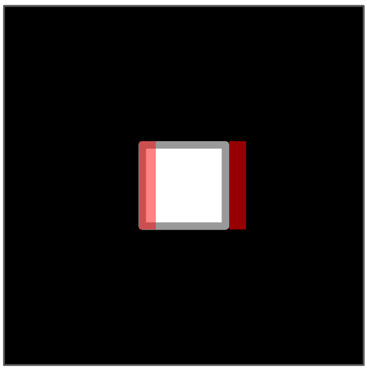
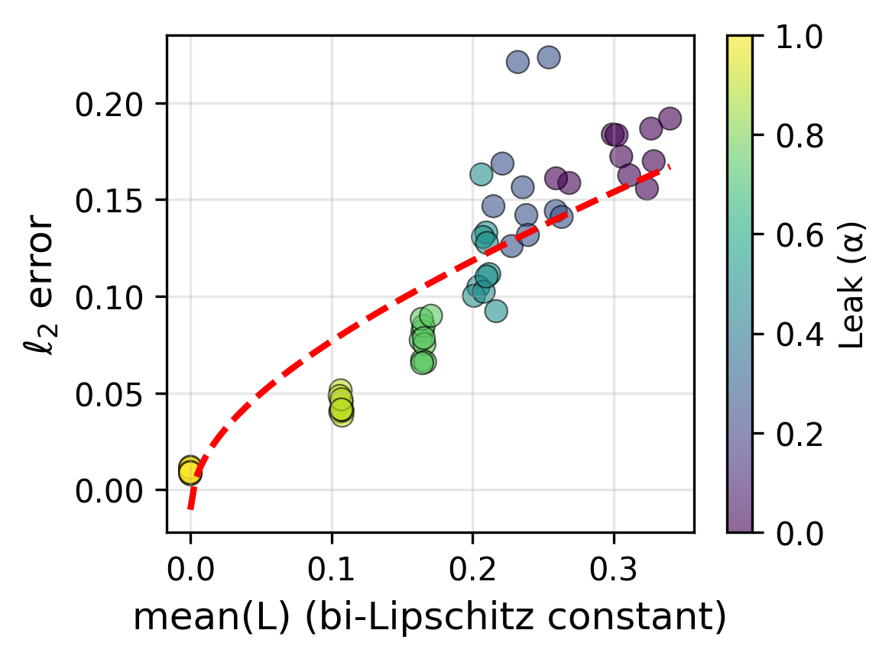

Statistical and structural identifiability in representation learning
Representation learning models exhibit a surprising stability in their internal representations. We separate this into two properties: statistical identifiability (consistency of representations across independent training runs) and structural identifiability (alignment with an unobserved ground truth). Because exact pointwise identifiability is unrealistic for modern models, we give model-agnostic definitions of statistical and structural near-identifiability up to a tolerance ε, and prove a statistical ε-near-identifiability result for the intermediate representations of models with nonlinear decoders — a class that includes (masked) autoencoders and supervised learners. Independent components analysis (ICA) resolves much of the remaining linear ambiguity, and under further assumptions on the data-generating process this yields a simple recipe for disentanglement: ICA post-processing of latent representations. The recipe reaches state-of-the-art disentanglement with a vanilla autoencoder on synthetic benchmarks, and on a foundation-model-scale microscopy MAE it separates biological variation from technical batch effects.
The puzzle: why are representations stable?
Disparate self-supervised models, trained on different data with different objectives, seem to converge on a shared set of representations of the world (Huh et al. 2024). The classical lens for this phenomenon is identifiability — in likelihood-based inference, the condition that data are sufficient to characterize a model’s parameters (Casella and Berger 2001). Neural networks complicate the picture: their parameter space is large and invariant to symmetries such as neuron permutations, and their training may lack a likelihood interpretation. Recent work therefore studies when infinite data suffices to pin down a model’s representations up to some equivalence class such as a linear transformation (Reizinger et al. 2025; Roeder et al. 2021).
This paper argues that prior identifiability results conflate two distinct notions, and sharpens the definitions accordingly.
- Statistical identifiability — retraining a model yields the same representations up to a simple transformation. The representations are consistent.
- Structural identifiability — retraining yields a particular representation that corresponds to a latent component of the data-generating process. The representations are consistently correct.
Both definitions are relaxed to admit an error tolerance \epsilon, making them — the authors argue — the first general-purpose formulations that handle representations which are only nearly identifiable.
Near-identifiability up to a tolerance
For a data distribution \mathbf{P}(x) and a model \mathcal{M} = \{\mathcal{L}_\theta : \theta \in \Theta\} with a representation map F : \theta \mapsto f_\theta, let \mathcal{S} \subset \Theta be the minimizers of the expected loss \mathbb{E}_{x \sim \mathbf{P}(x)}[\mathcal{L}_\theta(x)]. The model is statistically \epsilon-nearly identifiable up to \mathcal{H} if for every pair \theta, \theta' \in \mathcal{S},
\lVert f_\theta - h \circ f_{\theta'} \rVert \le \epsilon \quad\text{for some } h \in \mathcal{H},
where \mathcal{H} is a group of transformations on \mathbb{R}^D — the invertible linear maps \mathcal{H}_\text{linear}, the rigid maps \mathcal{H}_\text{rigid} (rotations, reflections, translations), or the signed permutations \mathcal{H}_\sigma.1 The slack term \epsilon is the only addition to prior definitions: two retrainings are near-identifiable if they agree up to a simple transformation and a small distortion.
1 Throughout, the norm is the L^\infty norm (essential supremum with respect to \mathbf{P}) over the Euclidean \ell_2 norm on \mathbb{R}^D. Setting \epsilon = 0 recovers exact identifiability in the limit.
Intermediate layers, not just the last one
Earlier results applied only to representations mapped linearly to the loss — the penultimate layer of a GPT-class model (Roeder et al. 2021). The paper’s main result extends identifiability to representations mapped to the loss nonlinearly, such as the latents of a (masked) autoencoder read out through a nonlinear decoder.
The setup. f_\theta is the encoder, g_\theta the decoder, and g_\theta \circ f_\theta the end-to-end network assumed to have identifiable outputs. Identifiability of the internal representation f_\theta is then governed by how much the decoder g_\theta deforms distances.
The informal statement: if the end-to-end map g_\theta \circ f_\theta is statistically identifiable in the limit, then the encoder f_\theta is statistically \epsilon-nearly identifiable up to \mathcal{H}_\text{rigid}, with
\epsilon = c_D \sqrt{2L + L^2}\,\Delta,
where 1 + L bounds the local bi-Lipschitz constant of the decoder g_\theta, and c_D and \Delta are constants independent of the model and of L. The nearness \epsilon shrinks as the decoder approaches an isometry (L \to 0). This is, the authors state, the most general result they are aware of for quantifying representation identifiability, covering masked autoencoders, next-token predictors, and supervised learners.
A second result shows that independent components analysis resolves the remaining linear ambiguity: whitening reduces a linear indeterminacy to a rigid one, and ICA (when well-converged) reduces the rigid indeterminacy to a signed permutation \mathcal{H}_\sigma, with nearness preserved up to new constants. Signed permutations are generally irreducible — there is no canonical ordering or sign for latent coordinates.
From statistical to structural identifiability
Statistical identifiability is weaker than structural identifiability, so recovering the true latents needs an extra assumption on the data-generating process. If the data are generated by pushing a non-Gaussian distribution with independent components through a smooth (1+\delta)-bi-Lipschitz diffeomorphism g, then a reconstructing encoder-decoder model that attains perfect reconstruction \epsilon-nearly identifies the structure g^{-1} up to \mathcal{H}_\text{rigid} — and, after ICA, up to \mathcal{H}_\sigma. Because the assumption made on the data-generating process (bi-Lipschitzness) mirrors the one on the model, structural identifiability follows as a corollary.
What kind of data satisfies the bi-Lipschitz assumption? The paper offers a continuous-image example: a white square of fixed radius sliding across a frame traces a manifold whose generating map is a local isometry (a 1-bi-Lipschitz constraint). Letting both the position and the radius vary makes the map conformal, and bi-Lipschitz on compact support.

Experiments
The paper runs four sets of experiments: a controlled warm-up on MNIST autoencoders, identifiability measurements on off-the-shelf pretrained models, disentanglement on synthetic benchmarks, and a real-world deconfounding application in cell microscopy.
Warm-up: controlling identifiability on MNIST
Using fully-connected autoencoders with orthogonal linear layers and LeakyReLU activations on MNIST (LeCun et al. 2010), the leak parameter \alpha tunes the decoder’s local bi-Lipschitz constant (\alpha = 1 gives a linear network, \alpha = 0 a ReLU network). As theory predicts, controlling the bi-Lipschitz constant L tracks the \ell_2 alignment error between independently trained pairs.

Identifiability of pretrained models
For pairs of models sharing architecture, loss, and training data but trained independently, the authors estimate the optimal permutation, rigid, linear, and ICA transforms between representation spaces and report the average \ell_2 error normalized by latent diameter (lower is better). GPT-class models align well under a linear transform; masked autoencoders align under a rigid one, as the theory predicts. ICA recovers a substantial fraction of the indeterminacy without supervision — for the MAE pair, nearly 60% as efficiently as the fully-supervised optimal rigid transform.
| Model pair | Permutation | Rigid | Linear | ICA (% eff.) |
|---|---|---|---|---|
| Pythia-160M-0 → Pythia-160M-1 | 0.219 | 0.150 | 0.131 | 0.202 (25%) |
MAE-timm → MAE-original |
0.197 | 0.109 | 0.036 | 0.145 (59%) |
| CheXpert-small → CheXpert-base | 0.218 | 0.104 | 0.048 | 0.175 (38%) |
| ResNet-18-fc-1 → ResNet-18-fc-2 | 0.382 | 0.206 | 0.175 | 0.312 (40%) |
Disentanglement with a vanilla autoencoder
Following the protocol of Hsu et al. (2023), a plain autoencoder with ICA applied to its latent space (AE + ICA) is compared against specialized disentanglement models on four datasets. Disentanglement is scored by InfoMEC — modularity (InfoM), explicitness (InfoE), and compactness (InfoC), of which the first two are emphasized as most important. The only tuned hyperparameter is weight decay. AE + ICA matches or beats the specialized baselines on the aggregated score, with essentially no tuning.
| Model | InfoM | InfoE |
|---|---|---|
| AE | 0.39 | 0.76 |
| β-VAE * | 0.59 | 0.81 |
| β-TCVAE * | 0.58 | 0.72 |
| BioAE * | 0.54 | 0.75 |
| AE + ICA (ours) | 0.65 | 0.83 |
Deconfounding at foundation-model scale
The recipe is then applied to OpenPhenom (Kraus et al. 2024), an open masked autoencoder for cell-painting microscopy trained on RxRx3-core (Kraus et al. 2025). A core challenge in this setting is batch effects — technical variation (from microscopes, labs, or experiments) that is not biologically meaningful. The downstream task classifies whether a perturbation was applied, with classifiers trained on a subset of plates and evaluated on held-out plates to probe out-of-distribution generalization. Comparing the raw embedding (Base), the PCA-whitened embedding, the whitened-then-ICA-rotated embedding, and a whitened-then-randomly-rotated control, ICA consistently improves AUROC and concentrates the biologically useful signal into fewer features (measured by Hoyer sparsity), separating biological from technical variation without supervision. All experiments share the same set of 22,062 control samples.
Why it matters
The headline contribution is a near-identifiability theory that, unlike prior work, leans on assumptions about the model (local bi-Lipschitzness of the decoder) rather than strong assumptions about the data-generating process — and therefore reaches the intermediate layers of real self-supervised models, including transformers. The practical payoff is a strikingly simple recipe: apply linear ICA to the latent space. It delivers competitive disentanglement from a vanilla autoencoder and, at foundation-model scale, deconfounds biological from technical variation in cell microscopy. The chief limitation the authors flag is that the bi-Lipschitz assumptions underpinning the theory are hard to verify empirically; they instead test the theory’s downstream consequences and appeal to prior work linking common regularizers to “dynamical isometry.”
Citation
@inproceedings{nelson2026,
author = {Nelson, Walter and Fumero, Marco and Karaletsos, Theofanis
and Locatello, Francesco},
title = {Statistical and Structural Identifiability in Representation
Learning},
booktitle = {International Conference on Learning Representations
(ICLR)},
date = {2026-03-12},
doi = {10.48550/arXiv.2603.11970}
}